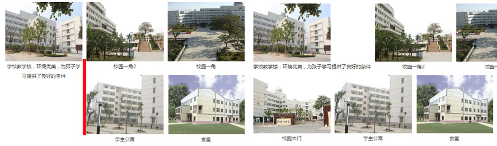
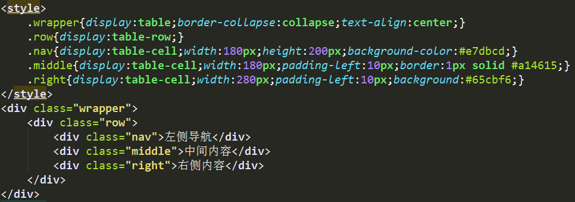
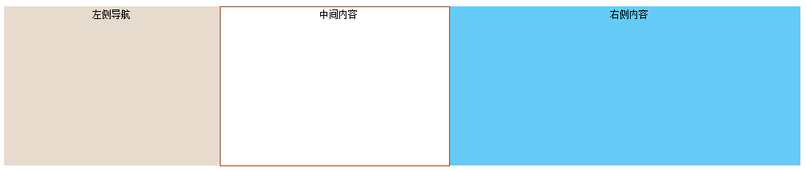
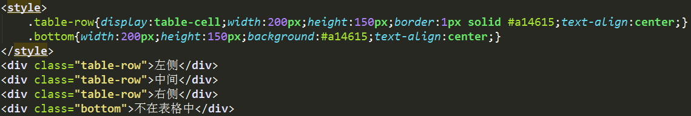
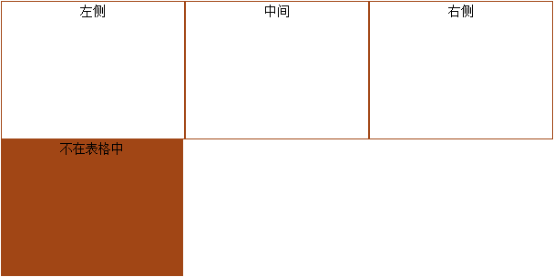
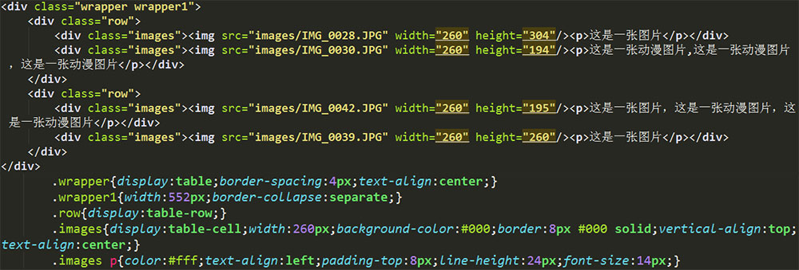
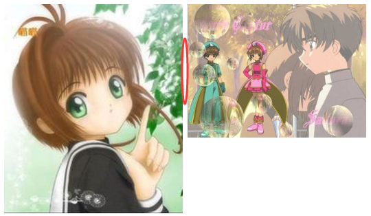
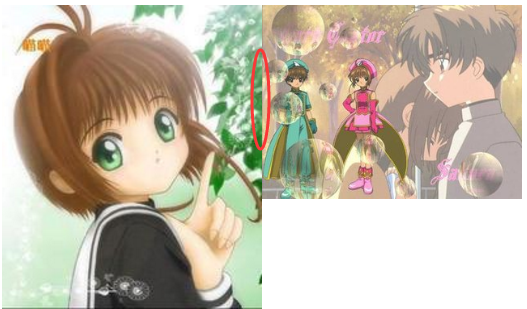
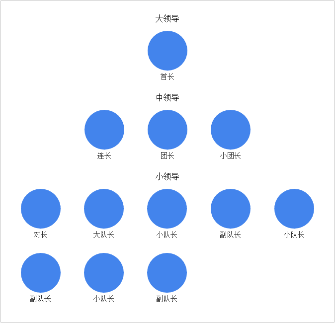

一、列表布局
列表布局就是具有相同DOM结构的水平排列可以repeat出来的列表元素。如图文展示栏目：
我们通常实现列表布局的方法是使用css的浮动属性，当然这并不是唯一方法。还有表格布局，基于display:inline-block的列表布局等等方式。
列表布局就是具有相同DOM结构的水平排列可以repeat出来的列表元素。如图文展示栏目：
我们通常实现列表布局的方法是使用css的浮动属性，当然这并不是唯一方法。还有表格布局，基于display:inline-block的列表布局等等方式。
通过float属性让列表元素依次排列，通常使用左浮动（float:left）来实现列表布局，我们常用的图文栏目就是使用了浮动来让这些列表元素实现水平排列。
使用浮动布局有时候有一定的局限性，就是要保证每一个列表元素的高度都是一致的，不然当列表元素排列到第二行时就会出现错乱的情况，第二行的第一个元素会与第一行的最高元素的右侧对齐，如下图，当然宽度也最好保持一致，这样才能保证列表元素排列的整齐性。

限制了高度的副作用就是需要裁掉一些文字信息，这样一眼看过去信息显示的是不完整，不过这时候合理使用title属性就可以解决这个问题，让鼠标在移上去时出现完整的文字信息，这个在我们的文章列表栏目中就得到了充分的体现。
浮动本身就有很多要注意的事项，在使用时要记得给父元素清除浮动以免出现高度塌陷的问题（父元素没有设定高度时）。右浮动时，越往右的元素越要写在前面，这样才能保证出现右浮动想要的效果。
用表格布局是不用担心元素因高度不等而出现位置错乱的情况。表格中一行tr就限制了每行列表会分开，不会出现错乱的情况，而且tr中包含的有水平列表项td或th，他们会自动关联等高。根据table自带的这些属性我们可以模仿出一个类似于table的布局方式，也就是基于 display:table的CSS布局。
使用css声明"display:table;"让HTML元素和它的子节点像table元素一样，可以很容易定义出一个单元格的边界及背景色等样式，不过这个属性只支持IE8及以上的浏览器。下面先写一个简单的HTML文档实例：

只设置了第一栏的高度，效果显示如下图：

由图可以看出这三栏是等高的。很轻松的就实现了三栏水平分布的布局，没有考虑清除浮动和定位的问题。
| 属性值 | 描述 |
|---|---|
| table | 使该元素按table样式渲染 |
| table-row | 使该元素按tr样式渲染 |
| table-cell | 使该元素按td样式渲染 |
| table-row-group | 使该元素按tbody样式渲染 |
| table-header-group | 使该元素按thead样式渲染 |
| table-footer-group | 使该元素按tfoot样式渲染 |
| table-caption | 使该元素按caption样式渲染 |
| table-column | 使该元素按col样式渲染 |
| table-column-group | 使该元素按colgroup样式渲染 |
因为table元素在HTML中是一个包含语义的标签，它描述了什么是数据，常用来标记那些需要制表的数据，但是我们布局的时候有时并不需要这种语义化。因此相比于直接用table元素布局，display:table属性就相对简单了很多，它仅仅是声明了元素在浏览器里的样式， 并没有包含特殊的语义。
匿名表格元素：CSS表格除了包含table布局的普通规则之外，同时还有着CSS table布局的超强特性：缺少的表格元素会被浏览器以匿名方式创建出来，这个被创建出来的元素就是匿名表格元素。一个表格模型中的元素可能不会完 全包含在除HTML之外的文档中，这时，那些“丢失”的元素会被模拟出来，从而使得表格模型能够正常工作。所有的表格元素将会自动在自身周围生成所 需的匿名table对象，使其符合table/inline-table、table-row、table-cell的三层嵌套关系。比方说给一个元素设置了"display:table-cell;" 属性，但是不给这个元素的父容器设置"display:table-row"属性，这时浏览器会默认创建出一个表格行，仿佛我们真的已经声明过了这个表格行一样。
拿上面的例子来说，我们现在有三层结构，我们先把最外层定义了"display:table;"属性的类名为wrapper的div元素给去掉，得到的效果是跟上面一样的；然后再把定义了"display:table-row;"属性的类名为row的div元素给去掉，得到的效果还是跟上面的一样。
创建匿名表格元素的规则：匿名表格元素的创建也是有规则的，虽然它们不会自动往HTML源代码添加标签，但是这些匿名的对象也不是随便就出现的。以下为匿名表格元素的创建规则：
如果布局中调用了匿名元素，浏览器会根据需要创建一个匿名的盒对象并将它的CSS display属性设置为table、table-row、table-cell其中的一个。
如果某个元素已经被设置为“display:table-cell;”，而它的父节点（包含它的容器）没有被设置为“display:table-row;”属性，那么浏览器将会创建一个被设置为“display:table-row;”的匿名盒对象来嵌套它。并且与之相邻的属性为“display: table-cell;”
的兄弟节点也都会被这个匿名盒对象所包含，直到碰到一个没有被设置为“display: table-cell;”的元素而结束这一行。
如果某个元素被设置为
“display:table-row;”，而它的父节点没有被设置为“display:table;”（或者“display:table-row-group;”），浏览器将会创建一个被设置为
“display:table;”的匿名盒对象来嵌套它，与之相邻的属性为“display: table-row;”的兄弟节点也都会被包含其中。
同样，如果某个元素被
设置为“display:table-row;”，但它的内部却缺少“display:table-cell;”的元素，那么一个匿名的table-cell将会被创建，用来包含该table-row
中的所有元素。其他的几个"display:table;"属性的规则也以此类推。实例如下：
HTML结构如下：

效果如下：

类名为tab-row的div元素设置了"display: table-cell;"属性，这三个div依次排成了三列，如同表格里的三个单元格一样
，最后一个类名为bottom的div元素并不在表格中。
其他有用的表格属性：
| 属性值 | 赋值 | 描述 |
|---|---|---|
| table-layout | fixed | 可以让浏览器按照固定算法来渲染单元格的宽度。 |
| border-collapse | collapse（公共）、separate（独立） | 定义table布局元素之间使用何种形式的边框，是共用边框，还是使用各自独立的边框 |
| border-spacing | 距离为多大（px） | 定义相邻两个单元格边框间的距离 |
用CSS表格可以很容易制作出一个包含图片和标题的影像图库栅格，不用我们去设置栅格的高度，简单方便，实例如下：
HTML代码如下：
display的inline-block属性结合了inline和block两种属性，既可以让元素保持行级元素不换行的属性，又有着块级元素的可以设置宽度和高度及外边距的属性，而且它可以内嵌block属性的元素，又可以包含在inline属性的元素中，使用起来很自由。
display:inline-block属性的兼容性：该属性可以兼容IE8及以上浏览器，对于IE6/7来说是不支持的，只是让其表现的跟inline-block一样，尤其是本来就是inline水平的元素。
普遍的IE8及以上浏览器可以直接使用display:inline-block；
对于IE6/7浏览器，inline水平元素的可以直接使用display:inline-block；然而block水平的元素就要多考虑一点，除了用到display:inline-block属性之外，还要设置IE6/7的单独特性，*display:inline; *zoom:1;
在使用inline-block属性时会有一个问题，就是换行空格间隙问题，在inline-block元素之间出现换行或空格时，它们之间就会出现间隙，就跟图片一样，两个不在同一行的img标签形成的效果图中间就会有空格。如下图所示：

为了消除这一空格，可以使用font-size:0;这一方法来解决，设置了该属性之后效果图如下：

还有其他解决因换行而出现空格的方法：
使用margin负值，负值的大小与上下文字体和文字的大小有关，具体的间距大小可以参考letter-spacing与字体大小/字体关系的数据表；
使用letter-spacing（字符间距），具体值的大小也是参考letter-spacing与字体大小/字体关系的数据表；
使用word-spacing（单词间距），值的大小和letter-spacing差不多，它的负值在很大的情况下时，元素之间不会发生重叠。设置了合适的大小之后，基本上就不存在兼容性了。
基于display:inline-block的列表布局：
布局的过程中每个列表的高度可以不一，不会出现其中一个列表的高度超出其他列表而致使列表换行的问题。而且还可以使用text-align:justify;属性实现列表元素两端对齐，还有使用white-space:nowrap;属性可以让列表元素不换行，它还能继承父元素
text-align:center;文本居中的属性，这为我们布局提供了更多的便利，还有一个属性vertical-align，这个属性对布局也有影响，可以设置为
vertical-align:top。下图为简单的inline-block布局实例。
没有设置vertical-align属性的效果
上图是设置了vertical-align属性时的效果，而且第一个列表的高度与其它的列表不同，在第二行的时候，并没有出现位置对不齐列表错开的情况。
基于inline-block属性的自由性，我们可以制作一些比较复杂的布局，给一个元素设置inline-block属性，让它的宽度可以自适应子元素的宽度，例如制作一个人员分布列表布局

详细demo效果展示